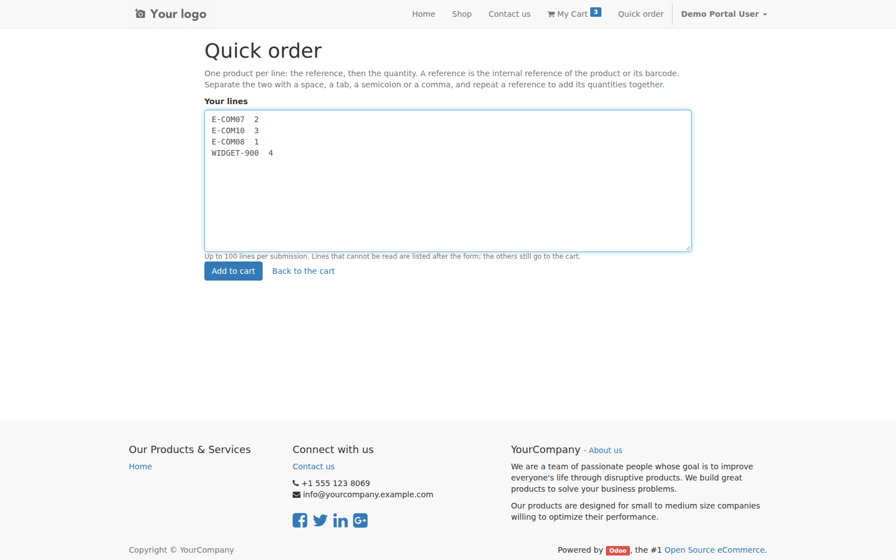
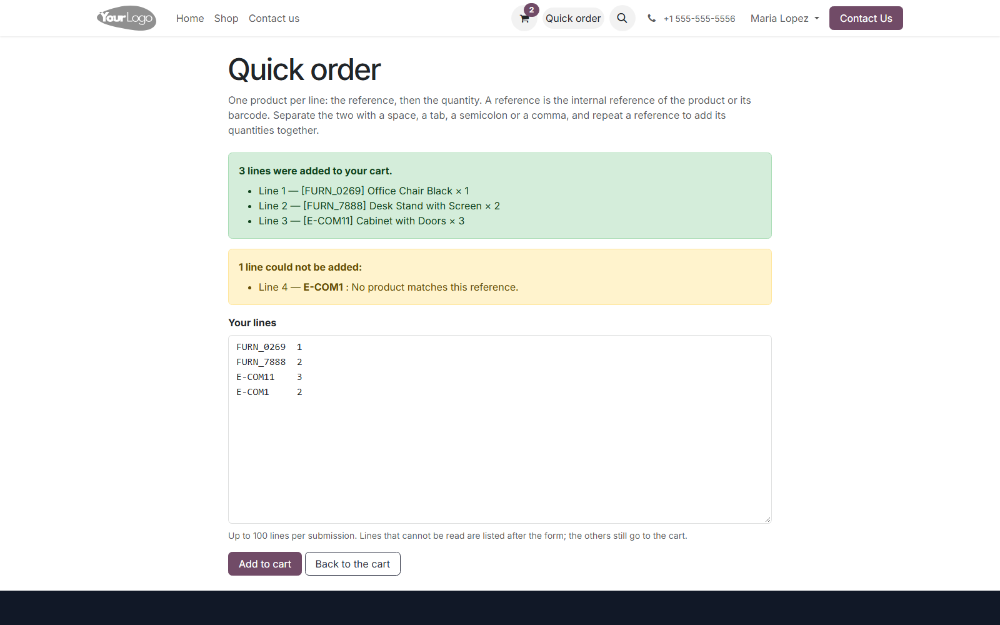

| What is typed | WIDGET-01 2 BOX-6 6 SKU_42; 12 NUTS,0.25 |
| What it means | Four lines, four articles. Blank lines are ignored and do not shift the numbering the answer quotes back. |
| The same reference twice | Summed, not duplicated: two lines of WIDGET-01 become one line of the cart with the total. The merge ignores case. |
| Which reference | The product's internal reference first, its barcode second. Two products sharing a reference is an ambiguity, and an ambiguity is reported rather than guessed. |
| The cap | A hundred lines per submission. Past that the list is refused whole, before anything is looked up. |
| Not published | A product hidden from the website is a line error, not a silent add. Archived and not-for-sale products are refused the same way, with their own sentence. |
| Pricelists | A pricelist that names products -- a product, a variant or a category rule -- sells those products; a global rule adds the rest of the catalogue. A pricelist that names nothing is a general one and sells everything. |
| Stock | Whatever the shop does when a product is out of stock, this page does too: it adds through the shop's own path and turns a refusal into a line error instead of forcing the line in. |
| Quantities | Positive numbers only. Zero, a negative number, a word or a line with no quantity at all is reported on its own line. |
| The form | Posts back to the shop with its CSRF token, like every other form of the site. There is no JSON endpoint to call without one. |
| Depends on | website_sale |
| License | OPL-1 |
| Odoo versions | 10.0 to 20.0, one branch per series -- this branch is 12.0 |
| Where it lives | /shop/quick-order, linked from the header of every page of the shop |
| Install | Apps → Update Apps List → search “Quick Order” → Install |